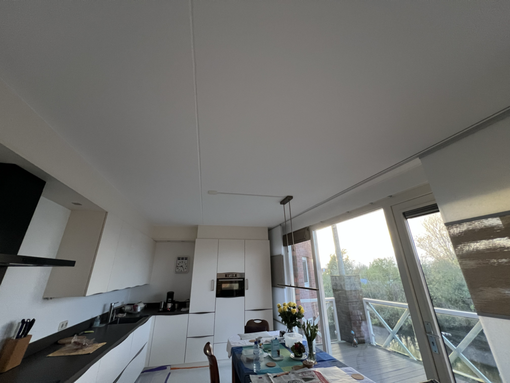
Binnen schilderwerk
Wanden, plafonds, kozijnen en deuren. Met goede verf en de juiste techniek krijgt uw ruimte een frisse uitstraling die lang mooi blijft. Vloeren en meubels worden eerst afgedekt.
Schilder- en stukwerk in Zutphen
Binnen, buiten of stucwerk: we kijken eerst naar uw wensen, denken mee en laten uw huis netjes achter. Voor een eerlijke prijs.
5,0 op Google uit 10 reviews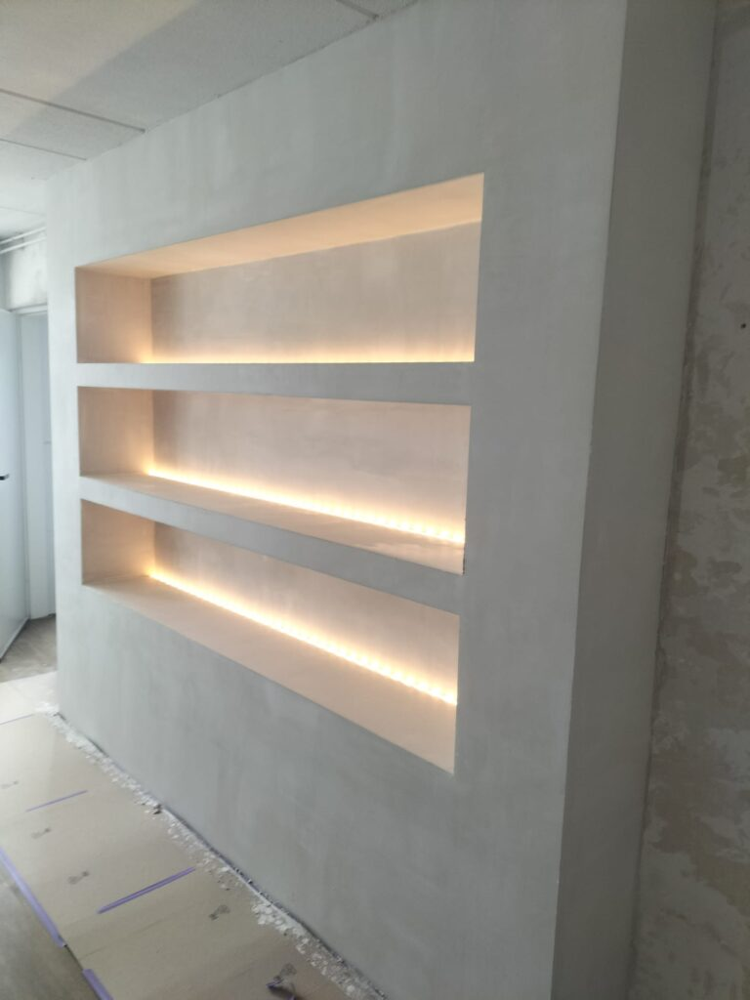
Stucwerk met verlichte nissen, door VELORIY
Schilderwerk en stucwerk voor woningen en bedrijfspanden, binnen en buiten. Groot of klein, u heeft één aanspreekpunt van advies tot oplevering.

Wanden, plafonds, kozijnen en deuren. Met goede verf en de juiste techniek krijgt uw ruimte een frisse uitstraling die lang mooi blijft. Vloeren en meubels worden eerst afgedekt.
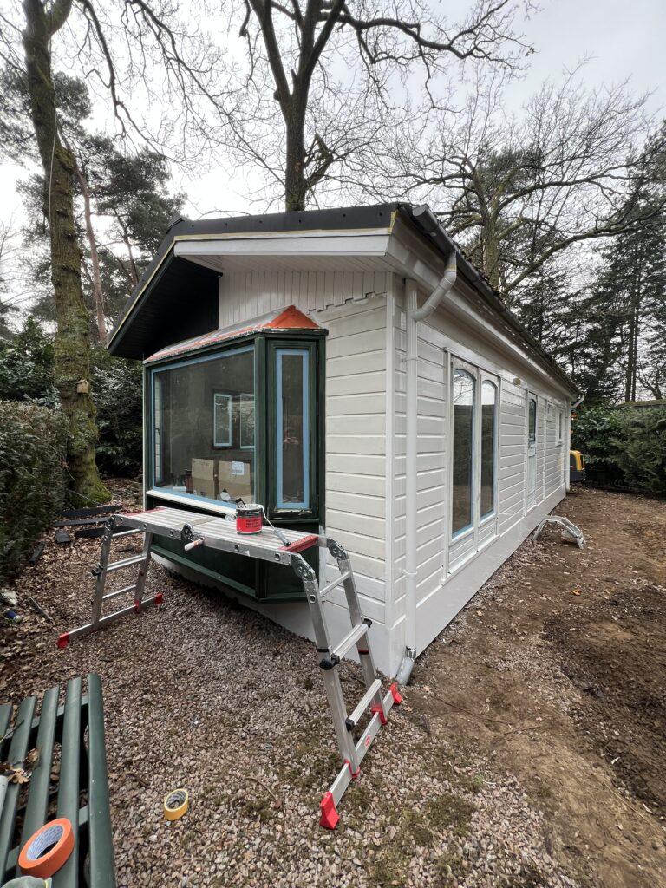
Gevels, kozijnen, boeidelen en houten bekleding. Buitenwerk beschermt uw huis tegen weer en wind, dus we gebruiken duurzame materialen die daar tegen kunnen.
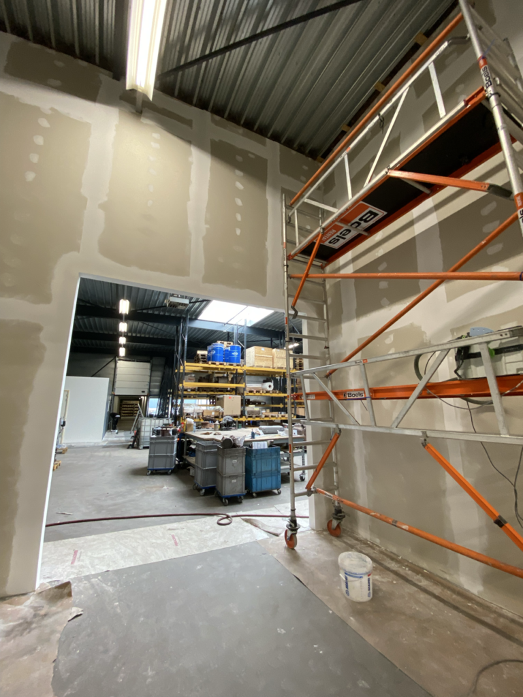
Wanden en plafonds strak gestuct, ook in bedrijfspanden. Een vlakke ondergrond die er goed uitziet en klaar is om te schilderen.
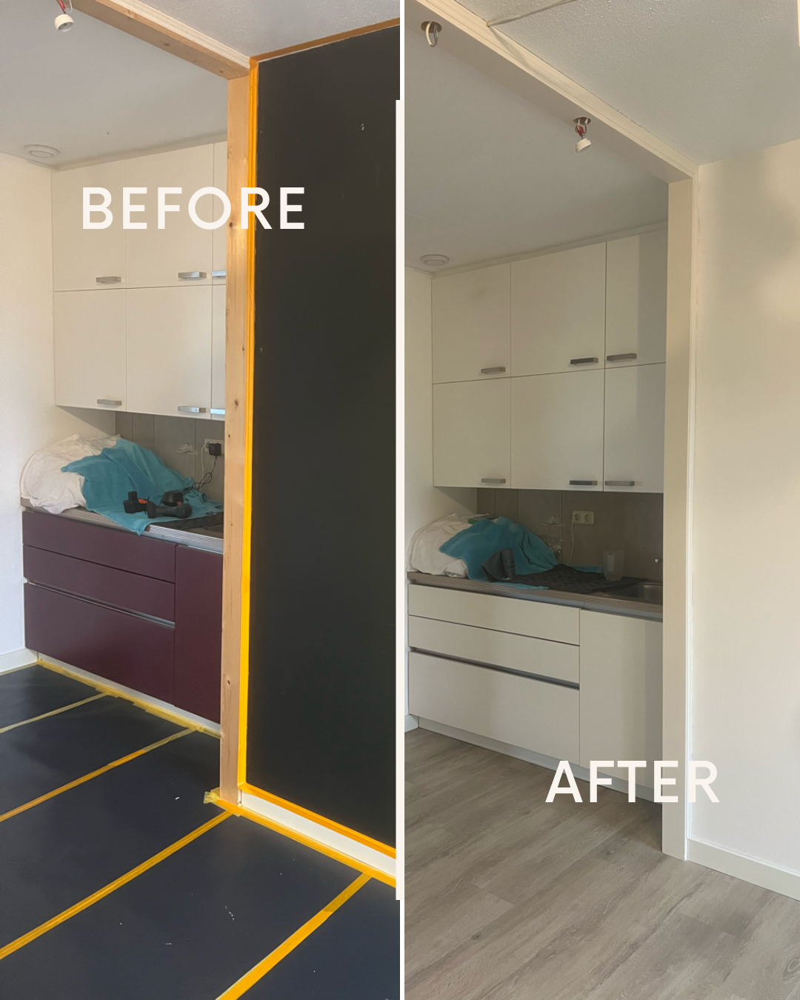
Een kamer, keuken of werkruimte die helemaal opnieuw moet. We begeleiden u van het eerste advies tot de laatste kwast, zodat u niet zelf alles hoeft te regelen.
Strak werk begint bij de voorbereiding. Zo pakken we elke klus aan.
Stap 1
We luisteren naar uw wensen, bekijken de ruimte en denken mee over kleur, afwerking en aanpak.
Stap 2
Een duidelijke planning, goede materialen, en alles wat niet geverfd moet worden netjes afgeplakt en afgedekt.
Stap 3
Met oog voor detail uitgevoerd volgens de afgesproken planning. Daarna ruimen we op en laten we alles schoon achter.
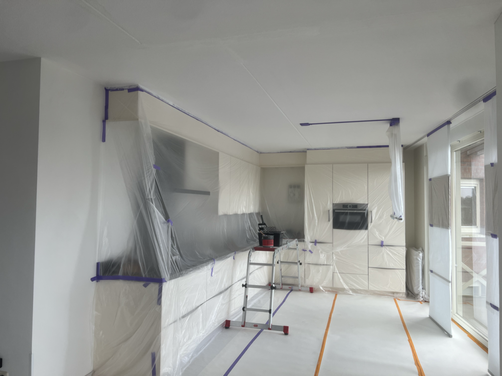
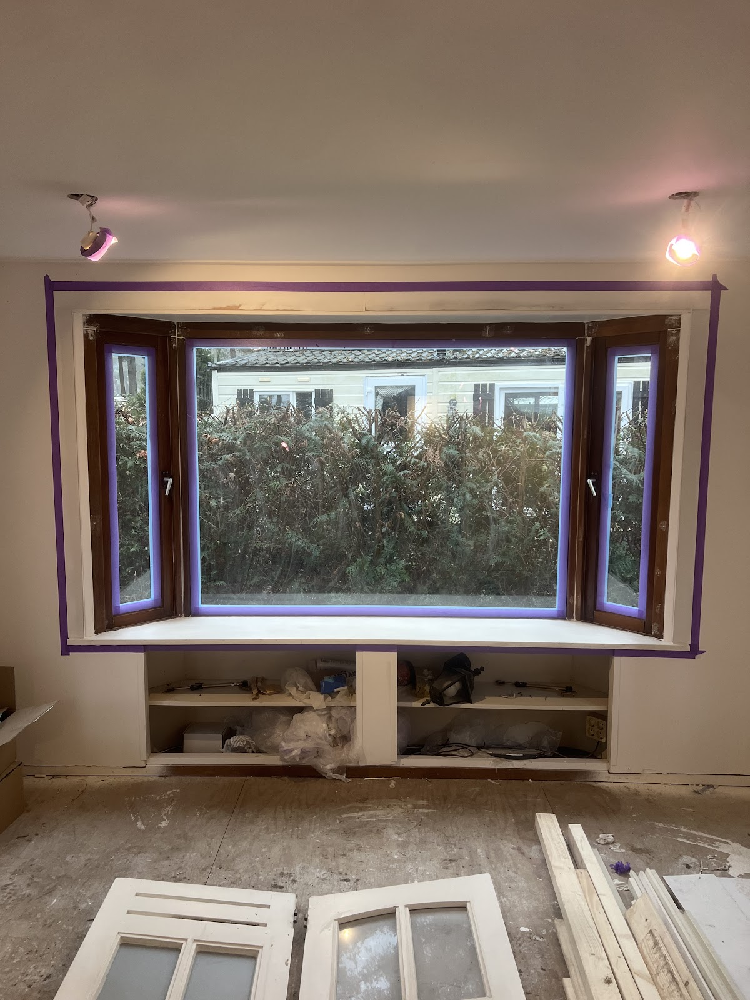
"De verf is strak aangebracht en alles is schoon achtergelaten."
Emre ÖZ, via Google
5,0 op Google uit 10 reviews
"Met veel geduld en precisie is het werk uitgevoerd. Zorgvuldig opgeruimd. Zeer vriendelijke beleefde man. Het was erg prettig om hem over de vloer te hebben. Hij denkt goed mee, stemt af en geeft adviezen. Kennis van zaken. Prijs kwaliteit prima. Eind conclusie: Uitstekend."
"Meneer kijkt naar wensen en denk met ons mee ik wilde 2 slaapkamers schilderen kozijnen en 2 deuren heeft perfecte werkzaamheden verricht echt een aanrader"
"Zeer professioneel. De verf is egaal aangebracht en er was aandacht voor elk klein detail."
"meneer was heel aardig kijkt naar wensen en eisen van een klant. ook lage tarief als ik dit bij een groot bedrijf had gedaan was ik meer geld kwijt en waarschijnlijk ook minder goed werk, hij heeft goede werkzaamheden verricht dankjewel topper!"
"Hartelijk bedankt voor jullie service, het was precies zoals ik het wilde. Een professioneel team, professioneel werk, gefeliciteerd!"
"Goede en vriendelijke communicatie. Er wordt goed meegedacht en heel mooi resultaat"
"Goede service en professioneel resultaat!"
Slaapkamers, dakkapellen, kozijnen en bedrijfsruimtes. Een greep uit de klussen van de laatste tijd.
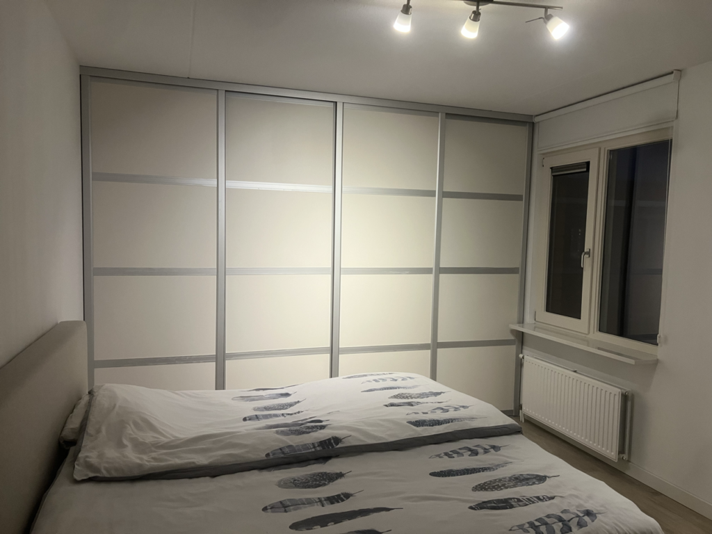
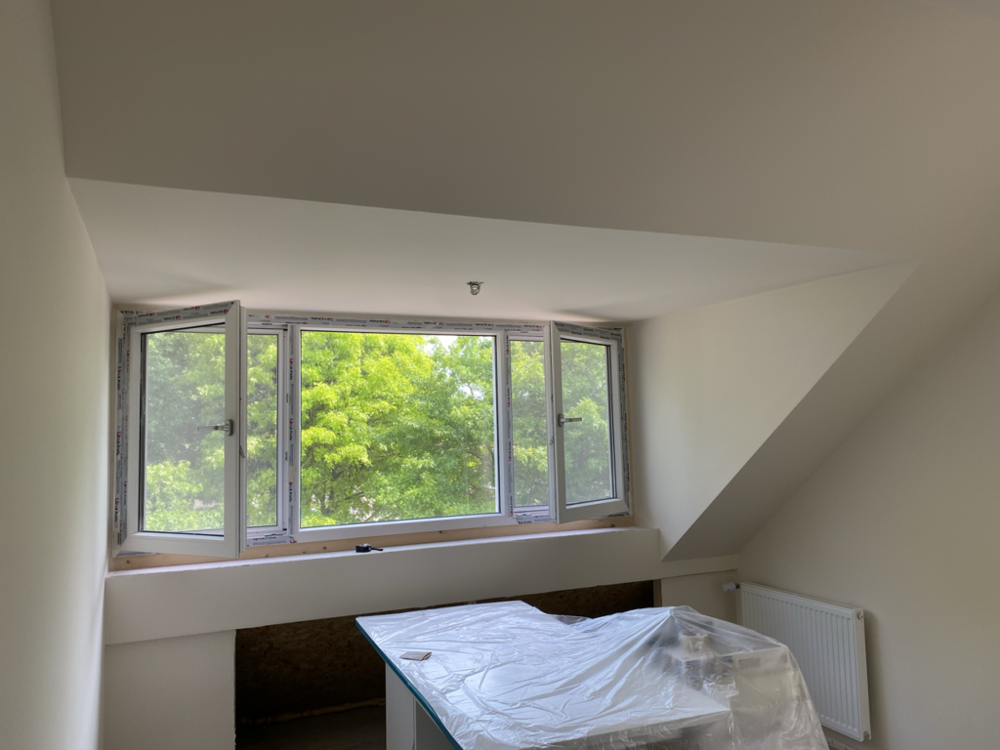
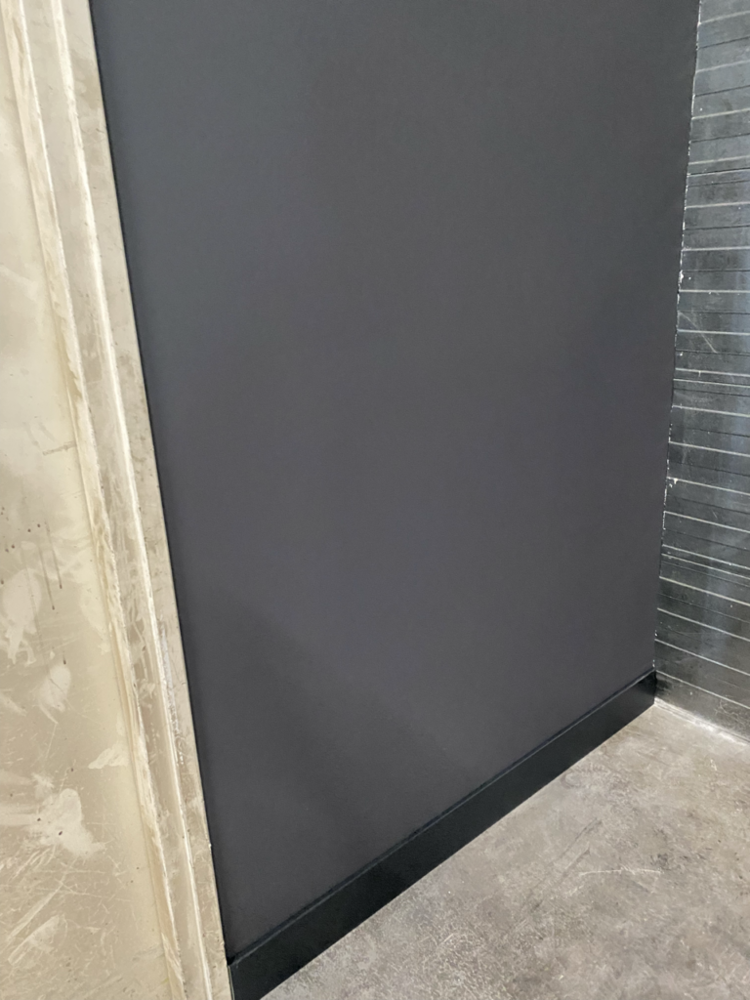
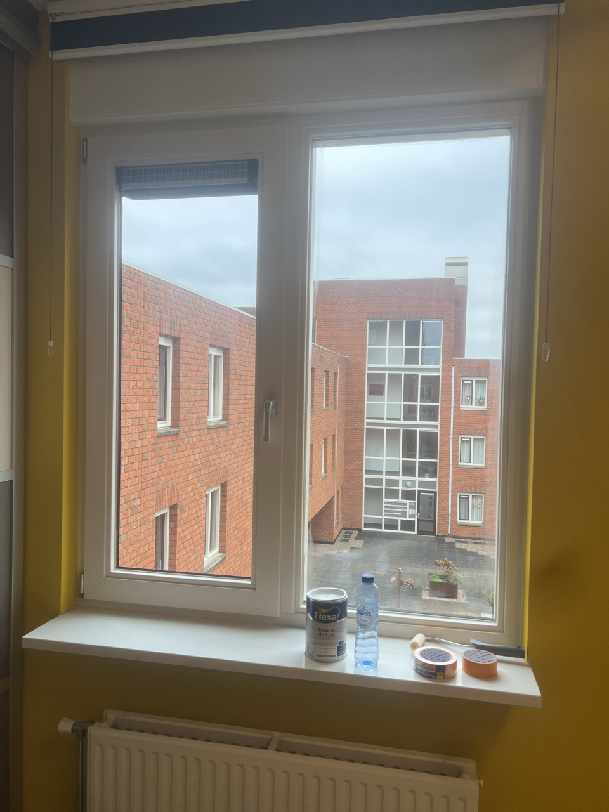
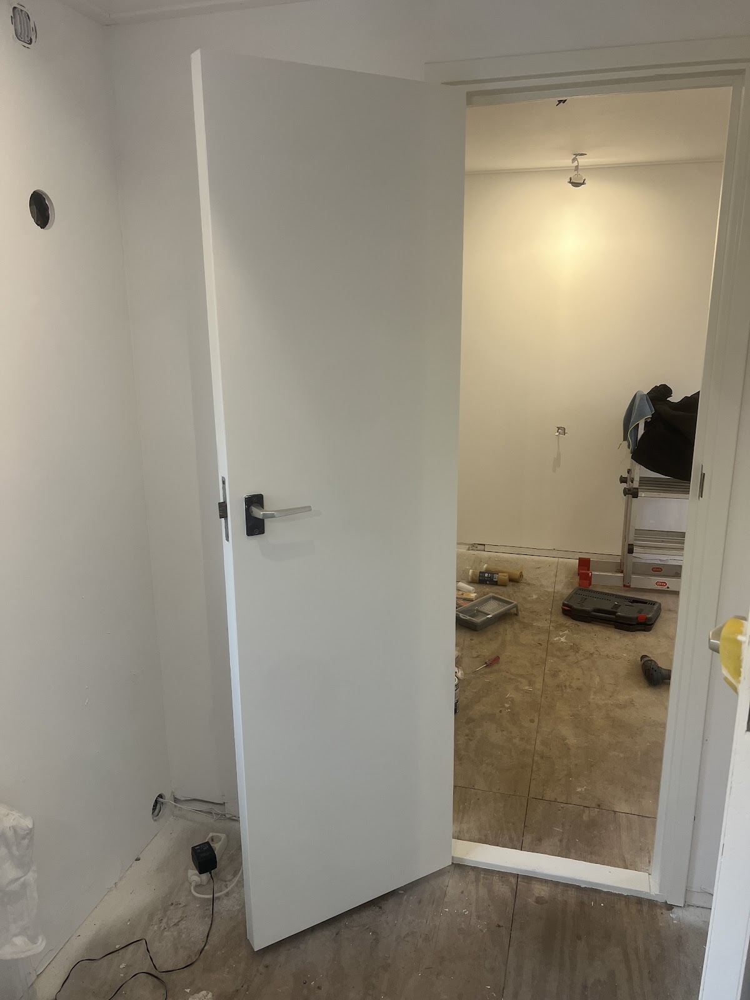
Bel of mail voor een vrijblijvende offerte. Vertel kort wat er moet gebeuren, dan komen we graag kijken.
Bel 06 14470066